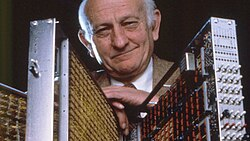

John Cocke | |
|---|---|
 | |
| Born | May 30, 1925 Charlotte, North Carolina, US |
| Died | July 16, 2002 (aged 77) |
| Education | Duke University (BS, MS, PhD) |
| Known for | RISC CYK algorithm |
| Awards | ACM Turing Award (1987) Computer Pioneer Award (1989) National Medal of Technology (1991) National Medal of Science (1994) IEEE John von Neumann Medal (1994) Computer History Museum Fellow (2002) |
| Scientific career | |
| Fields | Computer Science |
| Workplaces | IBM |
John Cocke (May 30, 1925 – July 16, 2002) was an American computer scientist at IBM and recognized for his large contribution to computer architecture and optimizing compiler design. He is considered by many to be "the father of RISC architecture."[1] He won the 1987 ACM Turing Award.
He was born in Charlotte, North Carolina, US. He attended Duke University, where he received his bachelor's degree in mechanical engineering in 1946 and his Ph.D. in mathematics in 1956. Cocke spent his entire career as an industrial researcher for IBM, from 1956 to 1992.[2]
Perhaps the project where his innovations were most noted was in the IBM 801 minicomputer, where his realization that matching the design of the architecture's instruction set to the relatively simple instructions actually emitted by compilers could allow high performance at a low cost.
He is one of the inventors of the CYK algorithm (C for Cocke). He was also involved in the pioneering speech recognition and machine translation work at IBM in the 1970s and 1980s, and is credited by Frederick Jelinek with originating the idea of using a trigram language model for speech recognition.[3]
Cocke was appointed IBM Fellow in 1972. He won the Eckert–Mauchly Award in 1985, ACM Turing Award in 1987,[4] the National Medal of Technology in 1991 and the National Medal of Science in 1994,[5][1] IEEE John von Neumann Medal in 1984, The Franklin Institute's Certificate of Merit in 1996, the Seymour Cray Computer Engineering Award in 1999, and The Benjamin Franklin Medal in 2000. He was a member of the American Academy of Arts and Sciences,[6] the American Philosophical Society,[7] and the National Academy of Sciences.[8]
In 2002, he was made a Fellow of the Computer History Museum "for his development and implementation of reduced instruction set computer architecture and program optimization technology."[9]
He died in Valhalla, New York, US.
Cocke's idea was to use fewer instructions, but design chips that performed simple instructions very quickly. [...] Later, this approach became known as reduced instruction set computing (Risc) [...]
.jpg){kind=link}